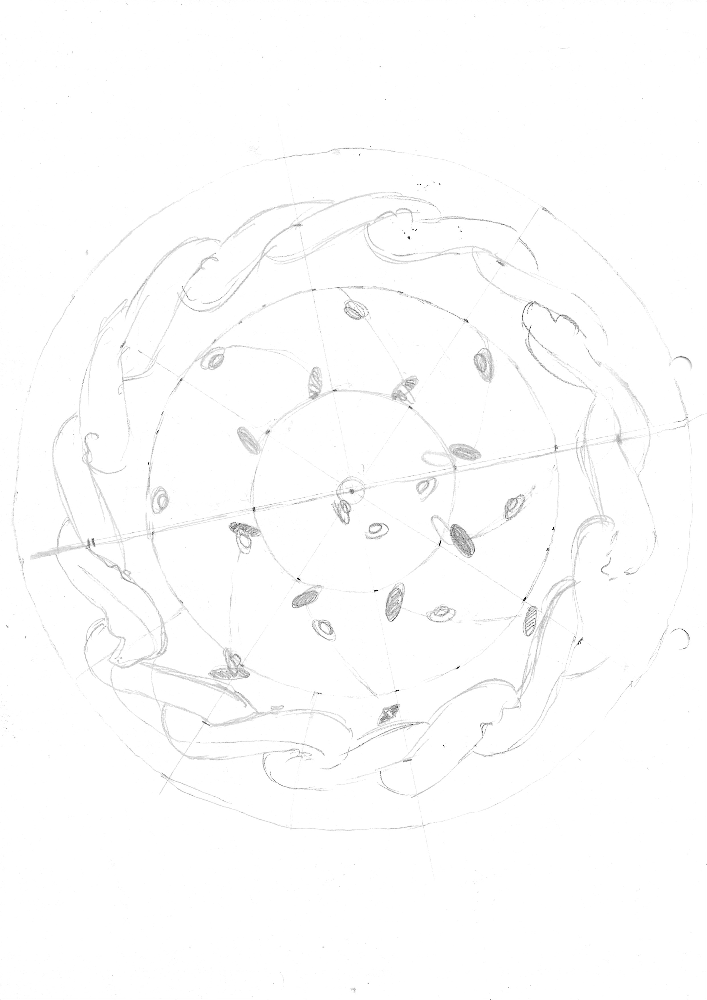
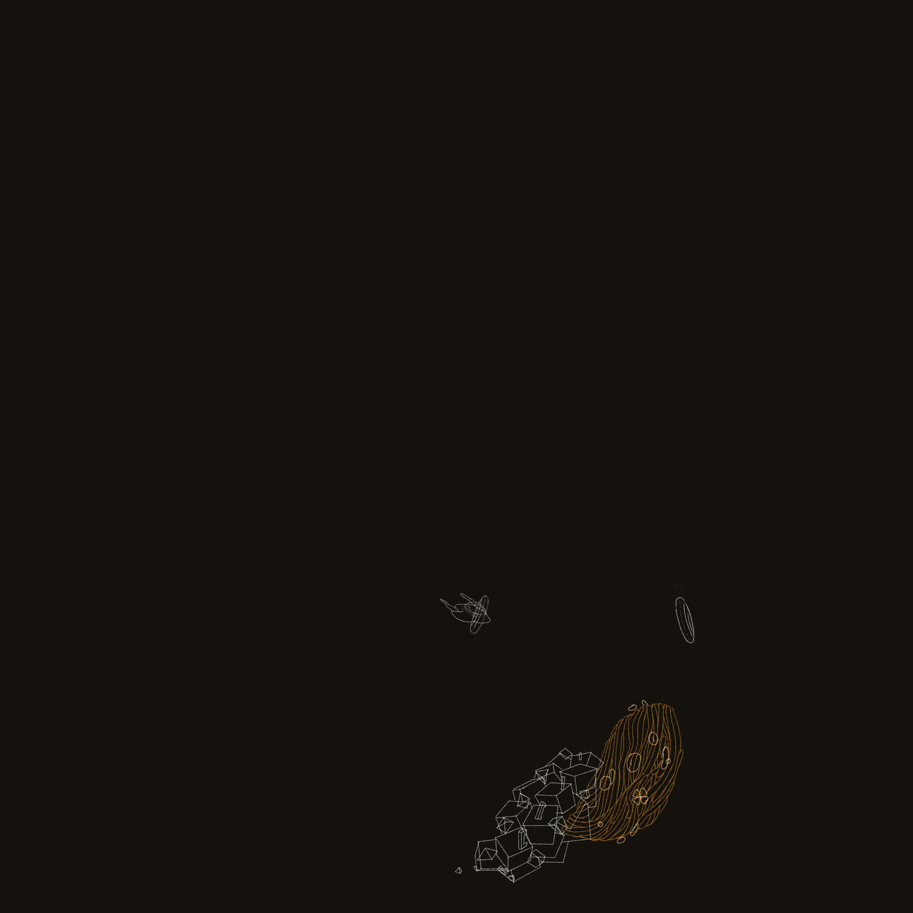
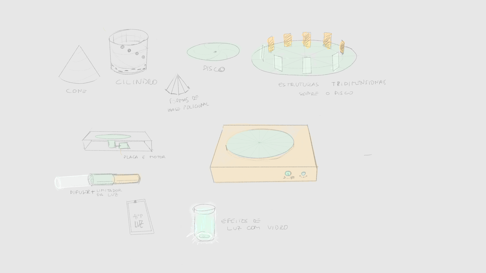

loops

Algumas variações de uma animação sem início, meio ou fim, refletindo sobre o tempo e o universo, a complexidade e a simplicidade, a repetição e a continuidade. Faz parte de um trabalho em processo de animações para zootropo.

Na direção contrária:

Comecei com este desenho à mão, onde eu planejava fazer um disco de 8 seções ou frames:
No digital parti para uma animação frame a frame com 12 quadros:
Espalhei as camadas em espaços de 30º (360º / 12 frames), para então fazer testes de cores:


Aprimorei a animação original e colorizei. O resultado é esta imagem que pode girar para qualquer lado:
A próxima fase do projeto consiste em fazer um dispositivo, um zootrópio eletrônico com controle de velocidade e da luz.
